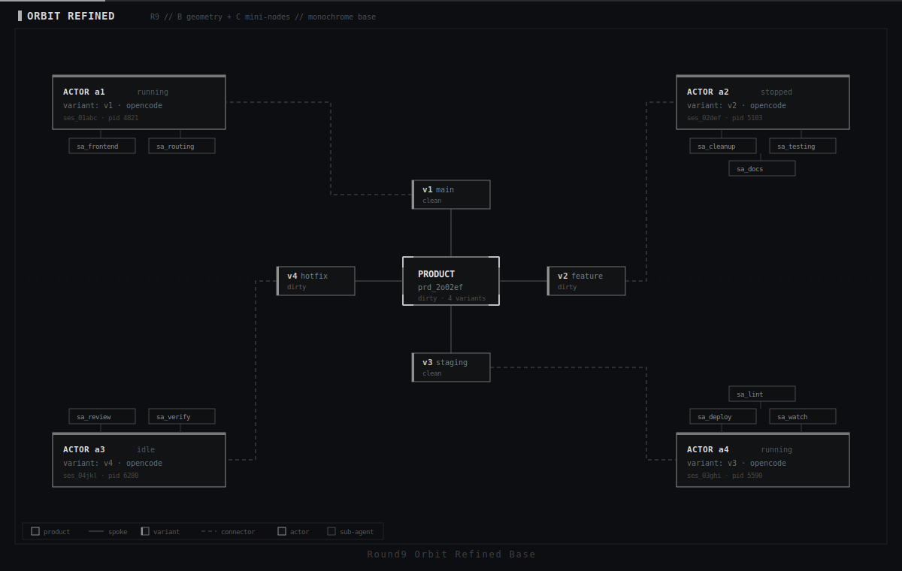
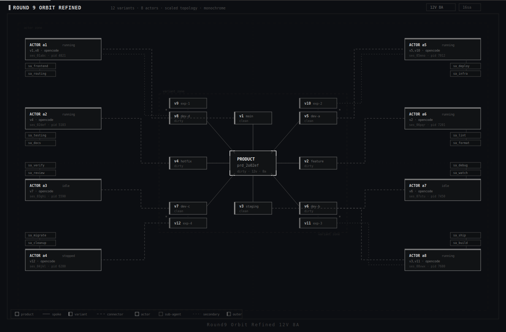
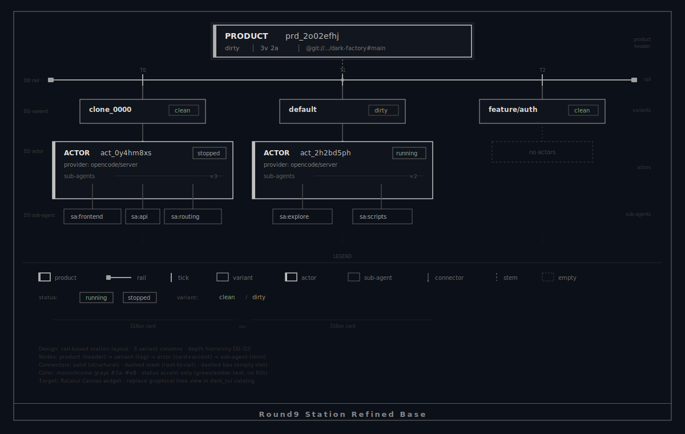
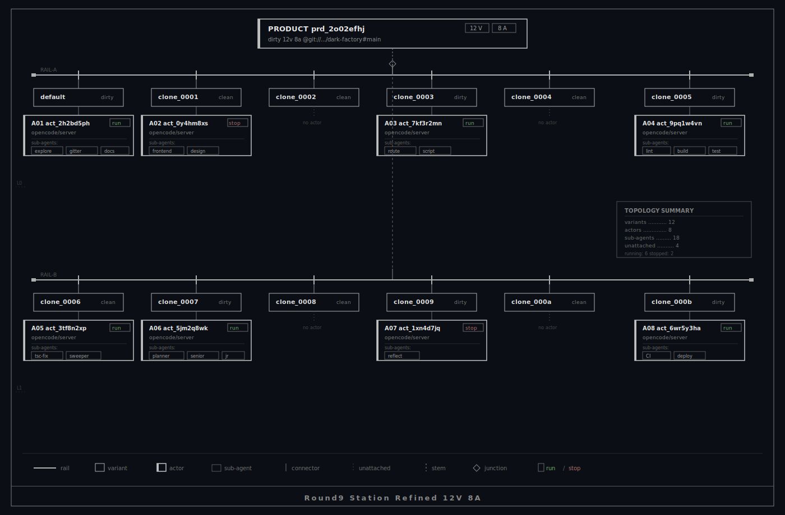

+-------------------------------------------------------------------+ | Dark Factory // Graph Node // Round 9 (Refined Candidates) | | | | Station intended for Graphical Tree replacement. | | Orbit intended for Graphical Node replacement. | | | | Each family: base (12v+12a) vs compact (12v+8a). | +-------------------------------------------------------------------+
--- ORBIT REFINED ---
Round9 Orbit Refined Base (12v+12a)
Vote: orbit-refined-base keep / tweak
Round9 Orbit Refined 12v8a
Vote: orbit-refined-12v8a keep / tweak
--- STATION REFINED ---
Round9 Station Refined Base (12v+12a)
Vote: station-refined-base keep / tweak
Round9 Station Refined 12v8a
Vote: station-refined-12v8a keep / tweak
Files: docs/reports/graph-node-round9-*.svg